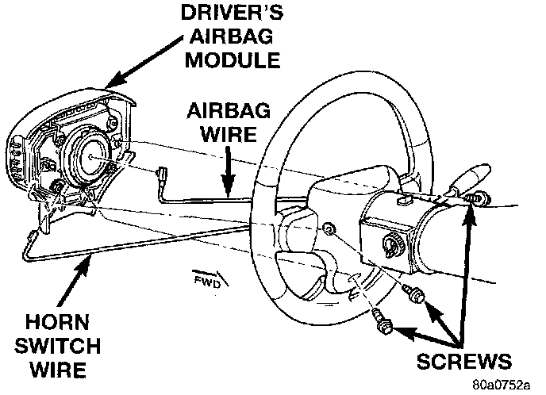

Driver Side Airbag Module Replacement
WARNING:^ The airbag system is a sensitive, complex electromechanical unit. Before attempting to diagnose or service any airbag system or related steering wheel, steering column, or instrument panel components you must first disconnect and isolate the battery negative (ground) cable. Then wait two minutes for the system capacitor to discharge before further system service. This is the only sure way to disable the airbag system. Failure to do this could result in accidental airbag deployment and possible personal injury.
^ When removing a deployed airbag module, rubber gloves, eye protection, and a long-sleeved shirt should be worn. There may be deposits on the airbag module and other interior surfaces. In large doses, these deposits may cause irritation to the skin and eyes.
1. Disconnect and isolate the battery negative cable. If the airbag module has not been deployed, wait two minutes for the system capacitor to discharge before further service.

2. From the underside of the steering wheel, remove the three screws that secure the driver side airbag module to the steering wheel.
3. Pull the airbag module away from the steering wheel far enough to unplug the airbag module and horn switch wire harness connectors from the back of the airbag module.
4. Remove the airbag module from the steering wheel.
5. If the airbag has been deployed, see the procedure for replacing the clockspring.
6. When installing the airbag module, connect the clockspring wire harness connector to the module by pressing straight in on the connector.
7. Install the three airbag module mounting screws and tighten to 10.2 N.m (90 in. lbs).
8. Do not connect the battery negative cable at this time. See Testing and Inspection/Procedures for the proper procedures.